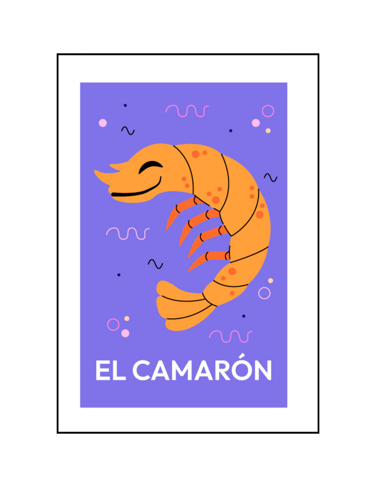

|

EL CAMARON
|
'Yo me parto la camisa como camarón Tu me rompes las entrañas me trepas como una araña'
In the shallow tide where the waters gleam, A tiny shrimp scuttles, a flicker, a dream. With legs like dancers, it twirls in delight, A jewel of the ocean, in the soft morning light. Its shell, a mosaic of pinks and soft grays, Reflects the sun’s warmth in a shimmering blaze. With antennae like whispers, it senses the flow, Of currents and secrets that only it knows. Beneath the sea's surface, in sand's gentle fold, It hides from the world, both timid and bold. A creature of wonder, so fragile, yet spry, In a dance with the waves, it leaps and it flies.From coral to kelp, it forages wide, A banquet of plankton, its treasures to bide. In tidal ballet, it sways with the tide, A marvel of nature, where beauty can hide. Yet, in the grand scheme of the ocean’s embrace, The shrimp plays its part, a small but vital space. In the web of the sea, it nourishes life, A feast for the fish, a cycle of strife. So here’s to the shrimp, both humble and bright, A spark of the ocean, a creature of light. In the depths of the blue, where mysteries gleam, The shrimp, a reminder of nature’s sweet dream.